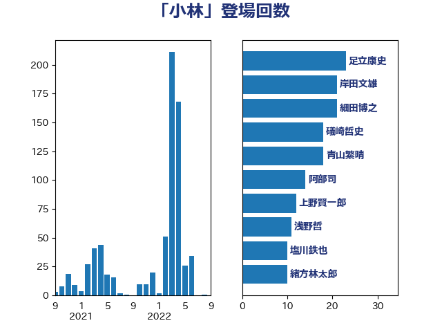

単語「小林」

| 足立康史 | 日本維新の会 | 23 回 |
| 岸田文雄 | 自由民主党 | 21 回 |
| 細田博之 | 自由民主党 | 21 回 |
| 礒崎哲史 | 国民民主党 | 18 回 |
| 青山繁晴 | 自由民主党 | 18 回 |
| 阿部司 | 日本維新の会 | 14 回 |
| 上野賢一郎 | 自由民主党 | 12 回 |
| 浅野哲 | 国民民主党 | 11 回 |
| 塩川鉄也 | 日本共産党 | 10 回 |
| 緒方林太郎 | 無所属 | 10 回 |
| 藤岡隆雄 | 立憲民主党 | 10 回 |
| 道下大樹 | 立憲民主党 | 10 回 |
| 青柳仁士 | 日本維新の会 | 10 回 |
| 小野泰輔 | 日本維新の会 | 9 回 |
| 熊谷裕人 | 立憲民主党 | 9 回 |
| 笠井亮 | 日本共産党 | 8 回 |
| 中谷一馬 | 立憲民主党 | 7 回 |
| 小沼巧 | 立憲民主党 | 7 回 |
| 有村治子 | 自由民主党 | 7 回 |
| 海江田万里 | 立憲民主党 | 7 回 |
| 伊藤岳 | 日本共産党 | 6 回 |
| 太栄志 | 立憲民主党 | 6 回 |
| 安達澄 | 無所属 | 6 回 |
| 小林鷹之 | 自由民主党 | 6 回 |
| 山口俊一 | 自由民主党 | 6 回 |
| 杉尾秀哉 | 立憲民主党 | 6 回 |
| 高木毅 | 自由民主党 | 6 回 |
| あかま二郎 | 自由民主党 | 5 回 |
| 中島克仁 | 立憲民主党 | 5 回 |
| 堀場幸子 | 日本維新の会 | 5 回 |
| 宮本徹 | 日本共産党 | 5 回 |
| 小林茂樹 | 自由民主党 | 5 回 |
| 尾身朝子 | 自由民主党 | 5 回 |
| 山本左近 | 自由民主党 | 5 回 |
| 山田賢司 | 自由民主党 | 5 回 |
| 川田龍平 | 立憲民主党 | 5 回 |
| 工藤彰三 | 自由民主党 | 5 回 |
| 本庄知史 | 立憲民主党 | 5 回 |
| 柳ヶ瀬裕文 | 日本維新の会 | 5 回 |
| 秋野公造 | 公明党 | 5 回 |
| 鶴保庸介 | 自由民主党 | 5 回 |
| 佐藤正久 | 自由民主党 | 4 回 |
| 塩田博昭 | 公明党 | 4 回 |
| 大石あきこ | れいわ新選組 | 4 回 |
| 山岸一生 | 立憲民主党 | 4 回 |
| 山本順三 | 自由民主党 | 4 回 |
| 山東昭子 | 自由民主党 | 4 回 |
| 斎藤嘉隆 | 立憲民主党 | 4 回 |
| 橋本岳 | 自由民主党 | 4 回 |
| 石田真敏 | 自由民主党 | 4 回 |
| 細田健一 | 自由民主党 | 4 回 |
| 萩生田光一 | 自由民主党 | 4 回 |
| 西村智奈美 | 立憲民主党 | 4 回 |
| 金田勝年 | 自由民主党 | 4 回 |
| あべ俊子 | 自由民主党 | 3 回 |
| ながえ孝子 | 無所属 | 3 回 |
| 國重徹 | 公明党 | 3 回 |
| 太田房江 | 自由民主党 | 3 回 |
| 山谷えり子 | 自由民主党 | 3 回 |
| 川合孝典 | 国民民主党 | 3 回 |
| 平井卓也 | 自由民主党 | 3 回 |
| 田村憲久 | 自由民主党 | 3 回 |
| 田村智子 | 日本共産党 | 3 回 |
| 石川博崇 | 公明党 | 3 回 |
| 石川大我 | 立憲民主党 | 3 回 |
| 石川昭政 | 自由民主党 | 3 回 |
| 福田昭夫 | 立憲民主党 | 3 回 |
| 若松謙維 | 公明党 | 3 回 |
| 落合貴之 | 立憲民主党 | 3 回 |
| 金子恭之 | 自由民主党 | 3 回 |
| 高木かおり | 日本維新の会 | 3 回 |
| 高木啓 | 自由民主党 | 3 回 |
| 三ッ林裕巳 | 自由民主党 | 2 回 |
| 三浦信祐 | 公明党 | 2 回 |
| 中川郁子 | 自由民主党 | 2 回 |
| 中根一幸 | 自由民主党 | 2 回 |
| 前原誠司 | 国民民主党 | 2 回 |
| 吉良州司 | 無所属 | 2 回 |
| 和田義明 | 自由民主党 | 2 回 |
| 大島敦 | 立憲民主党 | 2 回 |
| 大野敬太郎 | 自由民主党 | 2 回 |
| 小山展弘 | 立憲民主党 | 2 回 |
| 小野田紀美 | 自由民主党 | 2 回 |
| 山本博司 | 公明党 | 2 回 |
| 岩渕友 | 日本共産党 | 2 回 |
| 手塚仁雄 | 立憲民主党 | 2 回 |
| 日下正喜 | 公明党 | 2 回 |
| 早稲田ゆき | 立憲民主党 | 2 回 |
| 本村伸子 | 日本共産党 | 2 回 |
| 東徹 | 日本維新の会 | 2 回 |
| 根本匠 | 自由民主党 | 2 回 |
| 横沢高徳 | 立憲民主党 | 2 回 |
| 河野義博 | 公明党 | 2 回 |
| 猪口邦子 | 自由民主党 | 2 回 |
| 田村まみ | 国民民主党 | 2 回 |
| 田村貴昭 | 日本共産党 | 2 回 |
| 石原宏高 | 自由民主党 | 2 回 |
| 義家弘介 | 自由民主党 | 2 回 |
| 菅義偉 | 自由民主党 | 2 回 |
| 藤田文武 | 日本維新の会 | 2 回 |
| 西村康稔 | 自由民主党 | 2 回 |
| 野村哲郎 | 自由民主党 | 2 回 |
| 上野通子 | 自由民主党 | 1 回 |
| 中谷元 | 自由民主党 | 1 回 |
| 中野洋昌 | 公明党 | 1 回 |
| 今枝宗一郎 | 自由民主党 | 1 回 |
| 伊佐進一 | 公明党 | 1 回 |
| 伊藤渉 | 公明党 | 1 回 |
| 佐々木さやか | 公明党 | 1 回 |
| 佐々木紀 | 自由民主党 | 1 回 |
| 加藤勝信 | 自由民主党 | 1 回 |
| 勝部賢志 | 立憲民主党 | 1 回 |
| 古川俊治 | 自由民主党 | 1 回 |
| 古賀之士 | 立憲民主党 | 1 回 |
| 吉川ゆうみ | 自由民主党 | 1 回 |
| 吉田統彦 | 立憲民主党 | 1 回 |
| 堀井巌 | 自由民主党 | 1 回 |
| 大串博志 | 立憲民主党 | 1 回 |
| 大西健介 | 立憲民主党 | 1 回 |
| 奥野総一郎 | 立憲民主党 | 1 回 |
| 室井邦彦 | 日本維新の会 | 1 回 |
| 小寺裕雄 | 自由民主党 | 1 回 |
| 小里泰弘 | 自由民主党 | 1 回 |
| 山岡達丸 | 立憲民主党 | 1 回 |
| 山添拓 | 日本共産党 | 1 回 |
| 山田美樹 | 自由民主党 | 1 回 |
| 山際大志郎 | 自由民主党 | 1 回 |
| 島尻安伊子 | 自由民主党 | 1 回 |
| 志位和夫 | 日本共産党 | 1 回 |
| 新妻秀規 | 公明党 | 1 回 |
| 木原誠二 | 自由民主党 | 1 回 |
| 末松信介 | 自由民主党 | 1 回 |
| 松村祥史 | 自由民主党 | 1 回 |
| 柴山昌彦 | 自由民主党 | 1 回 |
| 柴田巧 | 日本維新の会 | 1 回 |
| 梶山弘志 | 自由民主党 | 1 回 |
| 森屋隆 | 立憲民主党 | 1 回 |
| 森山浩行 | 立憲民主党 | 1 回 |
| 江田憲司 | 立憲民主党 | 1 回 |
| 河西宏一 | 公明党 | 1 回 |
| 河野太郎 | 自由民主党 | 1 回 |
| 浜口誠 | 国民民主党 | 1 回 |
| 清水貴之 | 日本維新の会 | 1 回 |
| 玉木雄一郎 | 国民民主党 | 1 回 |
| 甘利明 | 自由民主党 | 1 回 |
| 田中英之 | 自由民主党 | 1 回 |
| 磯崎仁彦 | 自由民主党 | 1 回 |
| 若宮健嗣 | 自由民主党 | 1 回 |
| 荒井優 | 立憲民主党 | 1 回 |
| 谷田川元 | 立憲民主党 | 1 回 |
| 越智隆雄 | 自由民主党 | 1 回 |
| 野田国義 | 立憲民主党 | 1 回 |
| 鈴木義弘 | 国民民主党 | 1 回 |
| 長峯誠 | 自由民主党 | 1 回 |
| 阿部知子 | 立憲民主党 | 1 回 |
| 音喜多駿 | 日本維新の会 | 1 回 |
| 馬淵澄夫 | 立憲民主党 | 1 回 |
| 高良鉄美 | 無所属 | 1 回 |
| 黄川田仁志 | 自由民主党 | 1 回 |